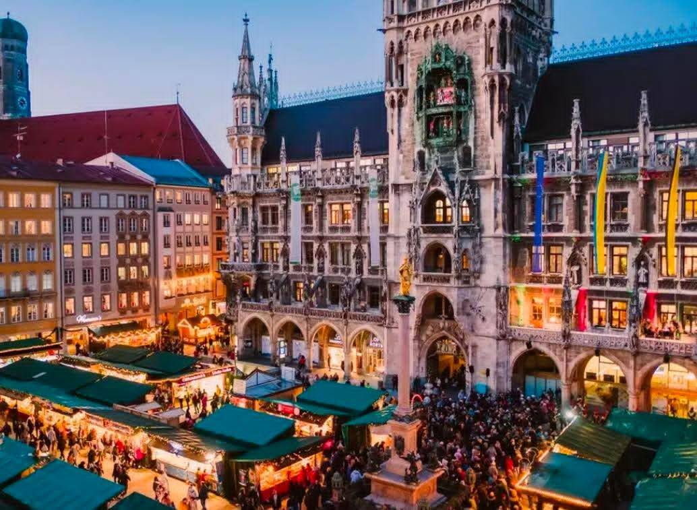

Viktualienmarkt (วิคทัวเลียนมาร์ค) เป็นตลาดสดเก่าแก่ใจกลางเมืองมิวนิก เยอรมนี เปิดตั้งแต่ปี ค.ศ. 1807 เป็นแหล่งรวมวัตถุดิบคุณภาพ อาหารพื้นเมือง ของว่าง และของฝากที่ห้ามพลาด จุดเด่นคือการจัดร้านที่สวยงาม มีเสาเดือนพฤษภาคม (Maypole) เป็นแลนด์มาร์ค เดินทางสะดวกอยู่ใกล้ Marienplatz
กิจกรรมและที่เที่ยวห้ามพลาดใน Viktualienmarkt:
ชิมอาหารพื้นเมือง: ลิ้มลองเบียร์สดที่ Beer Garden ใจกลางตลาด, ทานไส้กรอก, หรือเมนูชื่อดังอย่าง Leberkäse (เนื้อบดอบ)
ช้อปปิ้งของกิน: ตลาดมีแผงขายผลไม้ ผักสด ดอกไม้ เครื่องเทศ สมุนไพร น้ำมัน ผลไม้อบแห้ง และชีสหลากหลายชนิด
ถ่ายรูปแลนด์มาร์ค: เดินชมเสา Maypole (Maibaum) สูงที่ประดับด้วยสัญลักษณ์ของกินและอาชีพต่างๆ
ชมรูปปั้นและน้ำพุ: บริเวณตลาดมีน้ำพุที่สร้างเป็นอนุสรณ์ให้ศิลปินและนักแสดงพื้นเมืองที่มีชื่อเสียง
เดินเที่ยวเมืองเก่า: ตลาดอยู่ใกล้กับสถานที่สำคัญอย่าง Marienplatz (จัตุรัสมาเรียนพลาตซ์) และโบสถ์ Frauenkirche (โบสถ์โดมหัวหอม) ซึ่งเดินถึงกันได้ภายในไม่กี่นาที
ตลาดเปิดทุกวันจันทร์-เสาร์ (ปิดวันอาทิตย์) เป็นจุดที่นักท่องเที่ยวและคนท้องถิ่นนิยมมาเดินเล่นและหาของอร่อยทาน